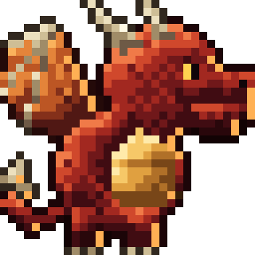

THE WARDEN · HERO STUDIES
Every sprite sits on a fixed pixel grid, shown at a whole-number scale so each pixel stays square. Under each study: grid size, colour count, display scale. Shading: light from the top left, five-tone ramps with dithering, scale and belly-plate texture, a rim light on the shadow side, and outlines tinted by the material they wrap.
{{r.title}}
{{r.spec}}
{{r.use}}
Small sizes
32×32 token · 32×22 eye · shown 4×
Token: the Draconia map, the profile corner, the tab bar. Eye: an ability or "Dragon's Gaze" icon, a renown emblem.
